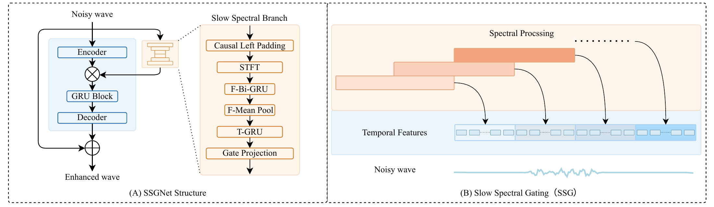

Online supplementary material
SSGNet: A Dual-Branch Network for Low-Latency Speech Enhancement via Slow Spectral Gating
Hangzhou Dianzi University, Hangzhou, China
Abstract
Neural speech enhancement faces computational challenges when low algorithmic latency and short buffering intervals are required. This paper presents the Slow Spectral Gating Network (SSGNet), a dual-branch framework with 1 ms algorithmic latency and a structural buffering latency of 62.5 µs at 16 kHz. The slow branch summarizes historical spectra at a low frame rate to guide sample-wise waveform enhancement in the fast branch. Slow spectral gating (SSG) converts these summaries into channel-wise gates that are reused across waveform updates, allowing enhancement to proceed between spectral updates. Experiments on VoiceBank+DEMAND show that SSG improves enhancement across three temporal backbones. SSGNet-GRU achieves a PESQ of 2.69, an eSTOI of 0.85, and an SI-SNR of 17.89 dB with 50.98 K parameters and 0.45 G MACs/s.
- Algorithmic latency
- 1 ms
- Structural buffering latency
- 62.5 µs
- Parameters
- 50.98 K
- Matrix computation
- 0.45 G MACs/s
SSGNet-GRU at 16 kHz, with a 64-sample spectral window and a 32-sample hop.
Listen & compare
Audio samples
Compare the same utterance across enhancement methods, then listen to each backbone with and without Slow Spectral Gating.
Input & reference
Baseline methods
GRU backbone
TCN backbone
SSM backbone
All spectrograms use identical STFT settings and a shared magnitude scale (−80 to 0 dB). All SSGNet variants use W = 64 and H = 32.
These are recorded enhancement examples. The latency values above describe the model architecture.
The proposed method
Slow spectral cues, fast waveform updates
SSGNet connects a Slow Spectral Branch to a Fast Time Branch. Spectral gates are reused between updates while the waveform branch continues to process every sample.

- 01
Summarize historical spectra
Frequency and temporal GRUs extract a compact representation from historical STFT features.
- 02
Reuse spectral gates
Channel-wise gates modulate the encoded waveform and remain fixed between spectral updates.
- 03
Enhance each sample
The fast backbone models waveform features, and a residual decoder reconstructs enhanced speech.